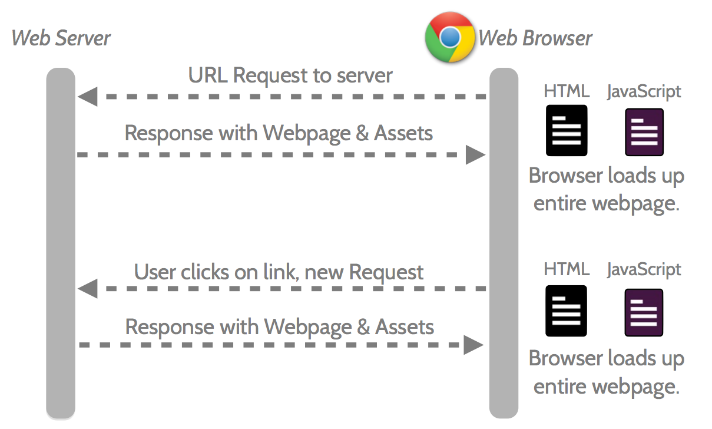
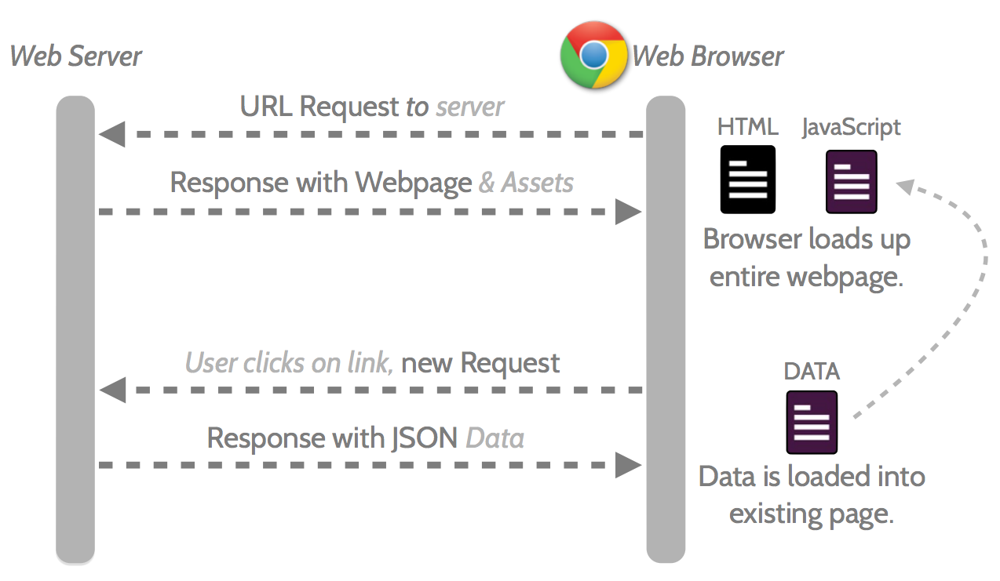

Changee Learning Path - 邁向進階之路
在網路的時代，我們在開始學習新領域時，可以透過 Google 找到許多學習的「資訊」，然而過多的資訊反而無法判斷什麼才是適合自己的「資源」。現有的學習資源非常豐富，但卻散落在各處，使得「自我學習」時總是花費大量時間在搜尋適合自己的資訊。因此我們希望能夠建立 Changee Learning Path「學習路徑平台」，整合資源與資訊，透過「學習分類帽」、「學習軌跡」、「實體資源」三個主要項目，建立方便自學的「學習路徑平台」。

在網路的時代，我們在開始學習新領域時，可以透過 Google 找到許多學習的「資訊」，然而過多的資訊反而無法判斷什麼才是適合自己的「資源」。現有的學習資源非常豐富，但卻散落在各處，使得「自我學習」時總是花費大量時間在搜尋適合自己的資訊。因此我們希望能夠建立 Changee Learning Path「學習路徑平台」，整合資源與資訊，透過「學習分類帽」、「學習軌跡」、「實體資源」三個主要項目，建立方便自學的「學習路徑平台」。
使用預處理語言加速開發維護
.content {
border: 1px solid #ccc;
padding: 20px;
h2 {
font-size: 3em;
margin: 20px 0;
}
p {
font-size: 1.5em;
margin: 15px 0;
}
}
.content {
border: 1px solid #ccc;
padding: 20px;
}
.content h2 {
font-size: 3em;
margin: 20px 0;
}
.content p {
font-size: 1.5em;
margin: 15px 0;
}.content {
border: 1px solid #ccc;
padding: 20px;
.callout {
border-color: red;
}
&.callout {
border-color: green;
}
}.content {
border: 1px solid #ccc;
padding: 20px;
}
.content .callout {
border-color: red;
}
.content.callout {
border-color: green;
}.sidebar {
float: right;
width: 300px;
.users & {
width: 400px;
}
}.sidebar {
float: right;
width: 300px;
}
.users .sidebar {
width: 400px;
}See the Pen Eryci by Tzu-Sheng Wu (@psdmac) on CodePen.
// Booleans
$rounded: false;
$shadow: true;
// Numbers
$rounded: 4px;
$line-height: 1.5;
$font-size: 3rem;
// Colors
$base: purple;
$border: rgba(0, 255, 0, 0.5);
$shadow: #333;
// Strings
$header: 'Helvetica Neue';
$callout: Arial;
$message: "Loading...";
// Lists
$authors: nick, dan, aimee, drew;
如果撰寫專案時有把基本色、強調色都設定成變數，那只要該一個，全都改了
（給我一個基本色，就有千千萬萬個顏色）
// 亮
lighten($color, $amount)
// 暗
darken($color, $amount)
// 飽和度
saturate($color, $amount)
// 降低飽和度
desaturate($color, $amount)
// 轉成灰階
grayscale($color)
// 取得補色
complement($color)
// 取得對比色
invert($color)
Don't repeat yourself
使用時機：大量重複樣式
// SCSS
@mixin button($radius, $color) {
border-radius: $radius;
color: $color;
}
.btn-a {
@include button(4px, #000);
}
// CSS
.btn-a {
border-radius: 4px;
color: #000;
}// SCSS
@mixin transition($val) {
-webkit-transition: $val;
-moz-transition: $val;
transition: $val;
}
.btn-a {
@include transition(color 0.3s
ease-in, background 0.5s ease-out);
}
// CSS
.btn-a {
-webkit-transition: color 0.3s ease-in, background 0.5s ease-out;
-moz-transition: color 0.3s ease-in, background 0.5s ease-out;
transition: color 0.3s ease-in, background 0.5s ease-out;
}使用時機：當你會用到群組選擇時 A, B
// SCSS
.btn-a {
background: #777;
border: 1px solid #ccc;
font-size: 1em;
text-transform: uppercase;
}
.btn-b {
@extend .btn-a;
background: #ff0;
}// CSS
.btn-a,
.btn-b {
background: #777;
border: 1px solid #ccc;
font-size: 1em;
text-transform: uppercase;
}
.btn-b {
background: #ff0;
}把所有的小圖壓成一張

以前網站這樣運作
現在網站這樣運作
See the Pen $routeProvide example by CarterTsai (@CarterTsai) on CodePen.